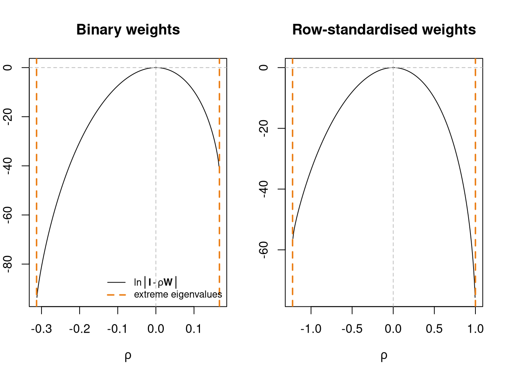

library(spdep)Loading required package: spDataLoading required package: sfLinking to GEOS 3.12.1, GDAL 3.8.4, PROJ 9.4.0; sf_use_s2() is TRUElwB <- nb2listw(unb, style="B")
lwW <- nb2listw(unb, style="W")library(spdep)Loading required package: spDataLoading required package: sfLinking to GEOS 3.12.1, GDAL 3.8.4, PROJ 9.4.0; sf_use_s2() is TRUElwB <- nb2listw(unb, style="B")
lwW <- nb2listw(unb, style="W")A neighbour object may be represented as a sparse matrix, and as the relationship is symmetric, as an undirected graph. Graphs may be directed or undirected, and edges may be weighted. Graphs are in wide contemporary use in analysing social networks, traffic metadata, and internet advertising. Graph analysis techniques may tell us helpful things about our representation of neighbours.
Moving from binary spatial weights to a symmetric sparse matrix - an adjacency matrix, we can go on to an undirected graph (see https://r.igraph.org/articles/igraph.html for details) using igraph; note that the region.id attribute of the nb object propagates through the row and column names of the sparse matrix to node names of the graph:
library(spatialreg)Loading required package: Matrix
Attaching package: 'spatialreg'The following objects are masked from 'package:spdep':
get.ClusterOption, get.coresOption, get.mcOption,
get.VerboseOption, get.ZeroPolicyOption, set.ClusterOption,
set.coresOption, set.mcOption, set.VerboseOption,
set.ZeroPolicyOptionB0 <- as(lwB, "symmetricMatrix")
library(igraph)
Attaching package: 'igraph'The following objects are masked from 'package:stats':
decompose, spectrumThe following object is masked from 'package:base':
uniong1 <- graph_from_adjacency_matrix(B0, mode="undirected")
c1 <- components(g1)
str(c1)List of 3
$ membership: Named num [1:324] 1 1 1 1 1 1 1 1 1 1 ...
..- attr(*, "names")= chr [1:324] "ADUR" "ALLERDALE" "ALNWICK" "AMBER VALLEY" ...
$ csize : num 324
$ no : num 1Had unb had subgraphs, the number of components would have been greater than one - this is the same as n.comp.nb in spdep:
str(n.comp.nb(unb))List of 2
$ nc : int 1
$ comp.id: int [1:324] 1 1 1 1 1 1 1 1 1 1 ...This is also shown by is_connected, as there are no nodes that are unconnected:
is_connected(g1)[1] TRUEdiameter is the largest number of steps taken to traverse the graph, and the i to j step count is highly correlated with the measured metric distance:
diameter(g1)[1] 23distances provides a matrix of all i to j step counts, showing that the minimum is 0, i to i steps with no self-loops:
str(g1d <- distances(g1)) num [1:324, 1:324] 0 18 19 13 1 12 5 6 10 10 ...
- attr(*, "dimnames")=List of 2
..$ : chr [1:324] "ADUR" "ALLERDALE" "ALNWICK" "AMBER VALLEY" ...
..$ : chr [1:324] "ADUR" "ALLERDALE" "ALNWICK" "AMBER VALLEY" ...summary(c(g1d)) Min. 1st Qu. Median Mean 3rd Qu. Max.
0.000 6.000 9.000 9.066 12.000 23.000 We can also look at the degree counts, which are symmetric for edges in an undirected graph, but which could be in-degree or out-degree for directed graphs:
head(sort(degree(g1), decreasing=TRUE))STRATFORD-ON-AVON HARBOROUGH HIGH PEAK RIBBLE VALLEY
11 9 9 9
AMBER VALLEY BRECKLAND
8 8 This is the same as examining the cardinality of neighbour sets:
cunb <- card(unb)
names(cunb) <- attr(unb, "region.id")
head(sort(cunb, decreasing=TRUE))STRATFORD-ON-AVON HARBOROUGH HIGH PEAK RIBBLE VALLEY
11 9 9 9
AMBER VALLEY BRECKLAND
8 8 Since we are looking at eigenvalues, page_rank - the Google approach to sorting hyperlinks (as a directed graph) - which uses the solution to the eigenvalue decomposition of the graph to rank web pages by incoming links:
head(sort(page_rank(g1)$vector, decreasing=TRUE))STRATFORD-ON-AVON RIBBLE VALLEY HIGH PEAK MID DEVON
0.005808958 0.005320926 0.005179886 0.005177169
EPPING FOREST CASTLE MORPETH
0.005025738 0.005022165 or the eigen_centrality of the graph:
head(sort(eigen_centrality(g1)$vector, decreasing=TRUE))STRATFORD-ON-AVON RUGBY WYCHAVON DAVENTRY
1.0000000 0.7239936 0.6912560 0.6907044
BROMSGROVE HARBOROUGH
0.6468678 0.6236657 So using eigenvalues in relation to graphs is well-established.
In general, the number of neighbours for each observation will be small compared to n, so that {\mathbf W} is usually sparse. Ord (1975) gives a maximum likelihood method for estimating the spatial error SAR model. Unlike the time series case, the logarithm of the determinant of the (N \times N) matrix ({\mathbf I} - \lambda {\mathbf W}) does not tend to zero with increasing sample size. It constrains the parameter values to their feasible range between the inverses of the smallest and largest eigenvalues of {\mathbf W}. For positive autocorrelation, \ln | {\mathbf I} - \lambda {\mathbf W}| \rightarrow -\infty as \lambda \rightarrow 1/\max_i(\zeta_i) - \zeta_i are the eigenvalues of {\mathbf W}.
The log-likelihood function for the spatial error model:
\ell(\lambda, \sigma^2) = - \frac{N}{2} \ln 2 \pi - \frac{N}{2} \ln \sigma^2 + \ln |{\mathbf I} - \lambda {\mathbf W}| - \frac{1}{2 \sigma^2} \big[{\mathbf y}'({\mathbf I} - \lambda {\mathbf W})' ({\mathbf I} - {\mathbf Q}_{\lambda}{\mathbf Q}_{\lambda}') ({\mathbf I} - \lambda {\mathbf W}){\mathbf y}\big]
where {\mathbf Q}_{\lambda} is obtained by decomposing ({\mathbf X} - \lambda {\mathbf W}{\mathbf X}) = {\mathbf Q}_{\lambda} {\mathbf R}_{\lambda}.
As we can see, the problem is one of balancing the log determinant term against the sum of squares term. When \lambda approaches the ends of its feasible range, the log determinant term may swamp the sum of squares term.
There are a number of areas in applied statistical data analysis in which the efficient computation of the log determinant of a possibly sparse real symmetric positive definite matrix is necessary. One of these is in finding the values of the log likelihood function for various spatial regression models, where the underlying sparse matrix of spatial weights represents a graph of relationships between observations. For small numbers of observations, there are no difficulties in treating the spatial weights matrix as dense, and computing the log determinant using its eigenvalues. The intention in this class is to discuss in detail developments in the computation of such log determinants.
The first published versions of the eigenvalue method for finding the Jacobian (Ord 1975) is:
\log(|{\mathbf I} - \lambda {\mathbf W}|) = \sum_{i=1}^{N} \log(1 - \lambda\zeta_i)
where \zeta_i are the eigenvalues of {\mathbf W}. One specific problem addressed by Ord is that of the eigenvalues of the asymmetric row-standardised matrix W with underlying symmetric neighbour relations c_{ij} = c_{ji}. If we write {\mathbf w} = {\mathbf C}{\mathbf 1}, where {\mathbf 1} is a vector of ones, we can get: {\mathbf W} = {\mathbf C}{\mathbf D}, where {\mathbf D} = {\mathrm {diag}}(1/{\mathbf w}); by similarity, the eigenvalues of {\mathbf W} are equal to those of: {\mathbf D}^{\frac{1}{2}}{\mathbf C}{\mathbf D}^{\frac{1}{2}}.
Many disciplines using spatial regression methods simply use unstandardised neighbour relations matrices which may or may not be symmetric. We show the lower and upper bounds for \rho for the 324 districts under different weights representations. The underlying eigenvalues have been calculated using the R eigen function, with symmetry of the input matrix determined by the internal code. Where symmetry by similarity exists, it is also discovered by the function:
eB <- eigenw(lwB)
eW <- eigenw(similar.listw(lwW))
cat("Class:", class(eB), "min:", 1/min(eB), "max:", 1/max(eB), "\n")Class: numeric min: -0.3129207 max: 0.1666602 eigW <- eigenw(similar.listw(lwW))
cat("Class:", class(eW), "min:", 1/min(eW), "max:", 1/max(eW), "\n")Class: numeric min: -1.224561 max: 1 Jacobian term and extreme eigenvalues
oopar <- par(mfrow=c(1,2), mar=c(4,2,4,2))
rhoB <- seq(1/min(eB), 1/max(eB), length.out=500)
plot(rhoB, sapply(rhoB, function(rho) sum(log(1 - rho*eB))), type="l", xlab=expression(rho), ylab="", main="Binary weights")
abline(v=1/range(eB), lty=2, lwd=2, col="#EB811B")
abline(h=0, v=0, lty=2, col="grey")
legend("bottomright", bty="n", legend=c(expression(plain(ln) * group("|", bold(I) - rho * bold(W), "|")), "extreme eigenvalues"), lty=c(1, 2), lwd=c(1, 2), col=c("black", "#EB811B"), cex=0.8)
rhoW <- seq(1/min(eW), 1/max(eW), length.out=500)
plot(rhoW, sapply(rhoW, function(rho) sum(log(1 - rho*eW))), type="l", xlab=expression(rho), ylab="", main="Row-standardised weights")
abline(v=1/range(eW), lty=2, lwd=2, col="#EB811B")
abline(h=0, v=0, lty=2, col="grey")
par(oopar)In a series of contributions, Pace and Barry (1997) show that sparse matrix methods can be used to find the log determinant directly. The method of choice is the Cholesky decomposition of a sparse, symmetric, positive-definite matrix. It but can be extended to the LU decomposition if requirements on the matrix need to be relaxed. Naturally, for the same sparse, symmetric, positive-definite matrix, one would expect the log determinants based on the Cholesky decomposition and the LU decomposition to be identical within machine precision.
Unlike the Saddlepoint approximation and the exact distribution, APLE does not require the calculation of the eigenvalues but rather the trace of \mathbf{W}\mathbf{W}. The trace is used to ``stretch’’ Moran’s I with respect to the feasible range of the equivalent simultaneous autoregression coefficient, which APLE approximates. Inference on APLE is based on permutation bootstrap (Li, Calder, and Cressie 2012).
c(crossprod(eigW))[1] 67.45592The cross-product of the eigenvalues is equal to the trace of the second power of the weights:
W <- as(lwW, "CsparseMatrix")
sum(diag(W %*% W))[1] 67.45592giving us the APLE:
var <- scale(log(eng324$realNetPre), scale=FALSE)[,1]
set.seed(1)
aple.mc(var, lwW, nsim=999)
DATA PERMUTATION
Call:
boot(data = x, statistic = aple.boot, R = nsim, sim = "permutation",
pre = pre, parallel = parallel, ncpus = ncpus, cl = cl)
Bootstrap Statistics :
original bias std. error
t1* 0.5534535 -0.5582679 0.08375269It has been suggested by Griffith (2003) that maps of eigenvectors of the spatial weights matrix may be used to explore the effect of scale, because some eigenvectors will show large scale structures, others will capture regional differences, and others again will represent small scale patterns (Chun and Griffith 2013; Griffith 2010; Patuelli et al. 2012)
x <- log(eng324$realNetPre)
moran.test(x, lwW)$estimateMoran I statistic Expectation Variance
0.341331393 -0.003095975 0.001348605 n <- nrow(eng324)
M <- diag(n) - (tcrossprod(rep(1, n)))/n
MCM <- M %*% W %*% M
c((n/sum(W)) * crossprod(x, MCM %*% x)/crossprod(x, M %*% x))[[1]]
1 x 1 Matrix of class "dgeMatrix"
[,1]
[1,] 0.3413314Following Tiefelsdorf and Griffith (2007), we can choose the eigenvectors of the doubly centred matrix that reduce residual autocorrelation most:
SF_pre_maj <- SpatialFiltering(form_pre_maj, data=eng324, nb=unb, style="W", alpha=0.33)
SF_pre_maj Step SelEvec Eval MinMi ZMinMi Pr(ZI) R2 gamma
0 0 0 0.0000000 0.105669000 3.2202539 0.001280771 0.8510363 0.0000000
1 1 4 0.9898642 0.083006376 2.6964636 0.007008007 0.8547590 -0.6563168
2 2 14 0.9023341 0.062556323 2.2195372 0.026450202 0.8582958 -0.6397312
3 3 10 0.9298828 0.047684764 1.8986116 0.057615562 0.8606846 -0.5257440
4 4 66 0.4246665 0.032731810 1.5196152 0.128607722 0.8659997 -0.7842311
5 5 17 0.8710660 0.017698183 1.1855141 0.235814258 0.8683604 0.5226422
6 6 19 0.8585573 0.005741818 0.9346916 0.349947252 0.8702059 0.4621184Then add this spatial term to the regular aspatial OLS model:
SF_pre_maj_lm <- lm(update(form_pre_maj, . ~ . + fitted(SF_pre_maj)), data=eng324)
spdep::lm.morantest(SF_pre_maj_lm, lwW)
Global Moran I for regression residuals
data:
model: lm(formula = update(form_pre_maj, . ~ . + fitted(SF_pre_maj)),
data = eng324)
weights: lwW
Moran I statistic standard deviate = 0.93469, p-value = 0.175
alternative hypothesis: greater
sample estimates:
Observed Moran I Expectation Variance
0.005741818 -0.027667662 0.001277623 The largest and smallest eigenvalues are needed to find the bounds of the domain of the spatial autoregressive coefficient. If n is moderate, as it is here, we can solve the eigenproblem by computation, and so have a benchmark. We can also use an approximation given by Griffith (2004) to find the extreme eiegenvalues of binary and row-standardised weights. Alternative methods can also be used, such as RSpectra to return the extreme eigenvalues of large sparse matrices.
Griffith (2004) shows how extreme eigenvalues of a binary symmetric contiguity matrix {\mathbf C} expressed as an undirected irreducible planar graph may be calculated.
The largest eigenvalue is found using the Rayleigh quotient approach:
\lambda_1 = \lim_{k\to\infty} \frac{({\mathbf 1}'{\mathbf C}^{k+1}{\mathbf 1})}{({\mathbf 1}'{\mathbf C}^k{\mathbf 1})}.
Griffith (2004) further describes an approach to finding the smallest eigenvalue of {\mathbf C}. This is extended to the case of the smallest eigenvalue of {\mathbf W}, the row-standardised spatial weights matrix based on {\mathbf C}.
ecount(g1) <= 3*vcount(g1) - 6[1] TRUE1/range(eB)[1] -0.3129207 0.1666602rB <- lextrB(lwB)
1/c(rB) lambda_n lambda_1
-0.3130520 0.1666602 1/range(eW)[1] -1.224561 1.000000rW <- lextrW(lwW)
1/c(rW) lambda_n lambda_1
-1.224561 1.000001 Implementations of these methods, based on original code by Griffith and re-implemented in R and C, are now available in spatialreg as functions lextrB and lextrW. For large regular grids, the eigenvalues of {\mathbf C} are known analytically for contiguity defined as non-zero shared boundary length (Ord 1975; Griffith and Sone 1995).
In the row-standardised cases, 1/\lambda_{\max} is 1 by construction, and as Smirnov and Anselin (2009) show, 1/\lambda_{\min} may be found to be -1 by graph analysis. If larger subgraphs, or the graph as a whole, are cyclical in Smirnov and Anselin’s terminology - for every location i, no pair of its neighbours j, k are connected - the smallest eigenvalue must be -1 by definition. Taking 1/\lambda_{\min}=-1 may be inappropriate for some lattices for which this condition does not hold, especially when more than one spatial coefficient is being estimated
library(RSpectra)
B <- as(as(B0, "symmetricMatrix"), "unpackedMatrix")
arB <- eigs(B, 2, which = "BE")
1/rev(arB$values)[1] -0.3129207 0.1666602W <- as(as(similar.listw(lwW), "CsparseMatrix"), "symmetricMatrix")
arW <- eigs(W, 2, which = "BE")
1/rev(arW$values)[1] -1.224561 1.000000We need eigenvalues (and eigenvectors) in many settings in spatial analysis. Eigenvalues can be used for testing spatial autocorrelation and fitting spatial regression models. Extreme eigenvalues are needed in fitting spatial regression models when n is large, because they give the interval for line search and nonlinear optimisation. Griffith approximations are fast and quite robust for symmetric weights, but when the input graphs diverge from the planarity condition, they may fail.